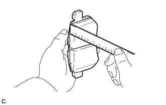
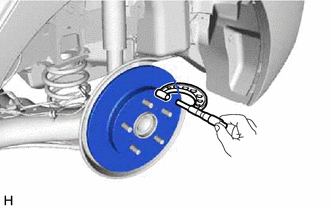
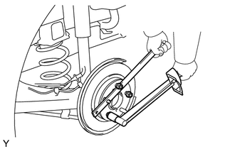
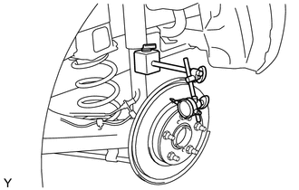

RM3140CG
_54
制动
_023993
制动器（后轮）
_0116087
后轮制动器
G
制动器（后轮） 后轮制动器 检查
程序

 1.检查制动缸和活塞
1.检查制动缸和活塞
a.
检查后盘式制动器制动缸缸孔和后盘式制动器活塞是否生锈和有划痕。如有必要，则更换后盘式制动器制动缸总成或后盘式制动器活塞。
2.检查衬块厚度
a.

2.125,0.792 2.323,0.615
2.323,0.615 2.563,0.615
false
2.625,0.531 2.938,0.688
0.313,0.156
10
*a
| *a | 直尺 |
使用直尺，测量后盘式制动器衬块厚度。
- 标准厚度:
9.5 mm (0.374 in.)
- 最小厚度:
1.0 mm (0.0394 in.)
如果后盘式制动器衬块厚度小于最小厚度，则更换后盘式制动器衬块。
- 提示：
-
更换新的后盘式制动器衬块时，确保检查后制动盘厚度。
3.检查后盘式制动器衬块支撑板
a.
确保后盘式制动器衬块支撑板有足够的反弹性，没有变形、破裂或磨损，并清除所有的锈迹和污物。如有必要，则更换后盘式制动器衬块支撑板。
4.检查制动盘厚度
a.

2,1.51 2,1.177
false
1.958,1.531 2.271,1.688
0.313,0.156
10
*a
| *a | 螺旋测微器 |
使用螺旋测微器，测量后制动盘厚度。
- 标准厚度:
9.0 mm (0.354 in.)
- 最小厚度:
7.5 mm (0.295 in.)
如果后制动盘厚度小于最小值，则更换后制动盘。
5.检查制动盘轴向跳动
a.
检查后桥轮毂轴承松弛度和后桥轮毂轴向跳动。
单击此处 动力传动系>车桥和差速器>后桥轮毂>车上检查201406,999999,_52,_023985,_0117167,RM100000000DCM2,
b.

0.885,1.896 1.135,1.896
1.135,1.896 1.365,1.688
true
0.604,1.833 1.063,2.031
0.458,0.198
10
SST
使用 SST 固定后制动盘，用 5 个轮毂螺母紧固后制动盘。
- SST
- 09330-00021
- 扭矩：
- 103 N*m (1050 kgf*cm, 76 ft.*lbf)
c.

2.74,1.5 2.74,1.292
2.74,1.292 2.302,1.292
true
2.677,1.521 2.99,1.677
0.313,0.156
10
*a
| *a | 百分表 |
使用百分表，在距离后制动盘外缘 10 mm (0.394 in.) 的地方测量制动盘轴向跳动。
- 制动盘最大轴向跳动:
0.15 mm (0.00590 in.)
- 备注：
-
使百分表的磁铁远离后桥轮毂和轴承总成。
如果轴向跳动超过最大值，则改变后制动盘的安装位置以减小轴向跳动。如果即使改变安装位置后，轴向跳动仍超过最大值，则研磨后制动盘。如果后制动盘厚度小于最小值，则更换后制动盘。
d.
拆下 5 个轮毂螺母和后制动盘。